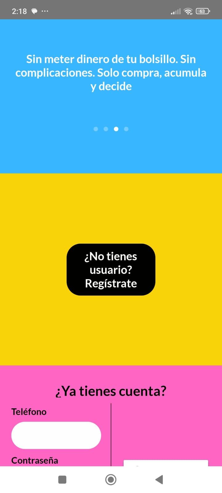

Paso 1
Descarga la app
Descarga Lo Nuestro en iOS o Android. Al abrirla, toca el botón “¿No tienes usuario? Regístrate”.
Lo Nuestro + Pancho Barfero
Con Lo Nuestro puedes hacer compras que ya ibas a realizar y decidir qué porcentaje de tu cashback quieres donar para ayudar a Locki y a otros animalitos rescatados.
Desliza o usa las flechas para ver cada pantalla. La idea es que el proceso se sienta como un caminito, no como un manual de lavadora 🌈
Si te interesa usar Lo Nuestro para ayudar a los animalitos, escríbenos y te guiamos paso a paso.